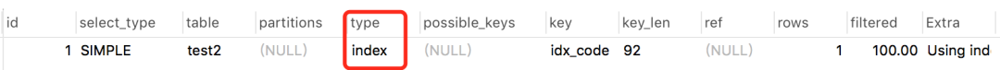

对于互联网公司来说，随着用户量和数据量的不断增加，慢查询是无法避免的问题。
一般情况下如果出现慢查询，意味着接口响应慢、接口超时等问题，如果是高并发的场景，可能会出现数据库连接被占满的情况，直接导致服务不可用。
1. 前言
慢查询的确会导致很多问题，我们要如何优化慢查询呢？
主要解决办法有：
- 监控sql执行情况，发邮件、短信报警，便于快速识别慢查询sql
- 打开数据库慢查询日志功能
- 简化业务逻辑
- 代码重构、优化
- 异步处理
- sql优化
- 索引优化
其他的办法先不说，后面有机会再单独介绍。今天我重点说说索引优化，因为它是解决慢查询sql问题最有效的手段。
如何查看某条sql的索引执行情况呢？
没错，在sql前面加上explain关键字，就能够看到它的执行计划，通过执行计划，我们可以清楚的看到表和索引执行的情况，索引有没有执行、索引执行顺序和索引的类型等。
索引优化的步骤是：
- 使用
explain查看sql执行计划 - 判断哪些索引使用不当
- 优化sql，sql可能需要多次优化才能达到索引使用的最优值
既然索引优化的第一步是使用explain，我们先全面的了解一下它。
2. explain介绍
先看看mysql的官方文档是怎么描述explain的：

- EXPLAIN可以使用于 SELECT， DELETE， INSERT， REPLACE，和 UPDATE语句。
- 当EXPLAIN与可解释的语句一起使用时，MySQL将显示来自优化器的有关语句执行计划的信息。也就是说，MySQL解释了它将如何处理该语句，包括有关如何连接表以及以何种顺序连接表的信息。
- 当EXPLAIN与非可解释的语句一起使用时，它将显示在命名连接中执行的语句的执行计划。
- 对于SELECT语句， EXPLAIN可以显示的其他执行计划的警告信息。
3. explain详解
explain的语法：
{EXPLAIN | DESCRIBE | DESC}
tbl_name [col_name | wild]
{EXPLAIN | DESCRIBE | DESC}
[explain_type]
{explainable_stmt | FOR CONNECTION connection_id}
explain_type: {
EXTENDED
| PARTITIONS
| FORMAT = format_name
}
format_name: {
TRADITIONAL
| JSON
}
explainable_stmt: {
SELECT statement
| DELETE statement
| INSERT statement
| REPLACE statement
| UPDATE statement
}用一条简单的sql看看使用explain关键字的效果：
explain select * from test1;执行结果：
从上图中看到执行结果中会显示12列信息，每列具体信息如下：

说白了，我们要搞懂这些列的具体含义才能正常判断索引的使用情况。
话不多说，直接开始介绍吧。
3.1 id 列
该列的值是select查询中的序号，比如：1、2、3、4等，它决定了表的执行顺序。
某条sql的执行计划中一般会出现三种情况：
- id相同
- id不同
- id相同和不同都有
那么这三种情况表的执行顺序是怎么样的呢？
id相同
执行sql如下：
explain select * from test1 t1 inner join test1 t2 on t1.id=t2.id结果：

我们看到执行结果中的两条数据id都是1，是相同的。
这种情况表的执行顺序是怎么样的呢？
答案：从上到下执行，先执行表t1，再执行表t2。
执行的表要怎么看呢？
答案：看table字段，这个字段后面会详细解释。
id不同
执行sql如下：
explain select * from test1 t1 where t1.id = (select id from test1 t2 where t2.id=2);结果：

我们看到执行结果中两条数据的id不同，第一条数据是1，第二条数据是2。
这种情况表的执行顺序是怎么样的呢？
答案：序号大的先执行，这里会从下到上执行，先执行表t2，再执行表t1。
id相同和不同都有
执行sql如下：
explain
select t1.* from test1 t1
inner join (select max(id) mid from test1 group by id) t2
on t1.id=t2.mid结果：
我们看到执行结果中三条数据，前面两条数据的的id相同，第三条数据的id跟前面的不同。
这种情况表的执行顺序又是怎么样的呢？
答案：先执行序号大的，先从下而上执行。遇到序号相同时，再从上而下执行。所以这个列子中表的顺序顺序是：test1、t1、
也许你会在这里心生疑问：< derived2> 是什么鬼？
它表示派生表，别急后面会讲的。
还有一个问题：id列的值允许为空吗？
答案在后面揭晓。
3.2 select_type列
该列表示select的类型。具体包含了如下11种类型：
但是常用的其实就是下面几个：
| 类型 | 含义 |
|---|---|
| SIMPLE | 简单SELECT查询，不包含子查询和UNION |
| PRIMARY | 复杂查询中的最外层查询，表示主要的查询 |
| SUBQUERY | SELECT或WHERE列表中包含了子查询 |
| DERIVED | FROM列表中包含的子查询，即衍生 |
| UNION | UNION关键字之后的查询 |
| UNION RESULT | 从UNION后的表获取结果集 |
下面看看这些SELECT类型具体是怎么出现的：
SIMPLE
执行sql如下：
explain select * from test1; 结果：
它只在简单SELECT查询中出现，不包含子查询和UNION，这种类型比较直观就不多说了。
PRIMARY 和 SUBQUERY
执行sql如下：
explain select * from test1 t1 where t1.id = (select id from test1 t2 where t2.id=2); 结果：
我们看到这条嵌套查询的sql中，最外层的t1表是PRIMARY类型，而最里面的子查询t2表是SUBQUERY类型。
DERIVED
执行sql如下：
explain
select t1.* from test1 t1
inner join (select max(id) mid from test1 group by id) t2
on t1.id=t2.mid 结果：
最后一条记录就是衍生表，它一般是FROM列表中包含的子查询，这里是sql中的分组子查询。
UNION 和 UNION RESULT
执行sql如下：
explain
select * from test1
union
select* from test2 结果：
test2表是UNION关键字之后的查询，所以被标记为UNION，test1是最主要的表，被标记为PRIMARY。而<union1,2>表示id=1和id=2的表union，其结果被标记为UNION RESULT。
UNION 和 UNION RESULT一般会成对出现。
此外，回答上面的问题： id列的值允许为空吗？
如果仔细看上面那张图，会发现id列是可以允许为空的，并且是在SELECT类型为：UNION RESULT的时候。
3.3 table列
该列的值表示输出行所引用的表的名称，比如前面的：test1、test2等。
但也可以是以下值之一：
<unionM,N>：具有和id值的行的M并集N。<derivedN>：用于与该行的派生表结果id的值N。派生表可能来自（例如）FROM子句中的子查询 。<subqueryN>：子查询的结果，其id值为N
3.4 partitions列
该列的值表示查询将从中匹配记录的分区
3.5 type列
该列的值表示连接类型，是查看索引执行情况的一个重要指标。包含如下类型：
执行结果从最好到最坏的的顺序是从上到下。
我们需要重点掌握的是下面几种类型：
system > const > eq_ref > ref > range > index > ALL
在演示之前，先说明一下test2表中只有一条数据：
并且code字段上面建了一个普通索引：
下面逐一看看常见的几个连接类型是怎么出现的：
system
这种类型要求数据库表中只有一条数据，是const类型的一个特例，一般情况下是不会出现的。
const
通过一次索引就能找到数据，一般用于主键或唯一索引作为条件的查询sql中，执行sql如下：
explain select * from test2 where id=1; 结果：
eq_ref
常用于主键或唯一索引扫描。执行sql如下：
explain select * from test2 t1 inner join test2 t2 on t1.id=t2.id; 结果：
此时，有人可能感到不解，const和eq_ref都是对主键或唯一索引的扫描，有什么区别？
答：const只索引一次，而eq_ref主键和主键匹配，由于表中有多条数据，一般情况下要索引多次，才能全部匹配上。
ref
常用于非主键和唯一索引扫描。执行sql如下：
explain select * from test2 where code = '001'; 结果：
range
常用于范围查询，比如：between … and 或 In 等操作，执行sql如下：
explain select * from test2 where id between 1 and 2; 结果：
index
全索引扫描。执行sql如下：
explain select code from test2; 结果：

ALL
全表扫描。执行sql如下：
explain select * from test2; 结果：
3.6 possible_keys列
该列表示可能的索引选择。
请注意，此列完全独立于表的顺序，这就意味着possible_keys在实践中，某些键可能无法与生成的表顺序一起使用。
如果此列是NULL，则没有相关的索引。在这种情况下，您可以通过检查该WHERE 子句以检查它是否引用了某些适合索引的列，从而提高查询性能。
3.7 key列
该列表示实际用到的索引。
可能会出现possible_keys列为NULL，但是key不为NULL的情况。
演示之前，先看看test1表结构：
test1表中数据：
使用的索引：
code和name字段使用了联合索引。
执行sql如下：
explain select code from test1;结果：
这条sql预计没有使用索引，但是实际上使用了全索引扫描方式的索引。
3.8 key_len列
该列表示使用索引的长度。上面的key列可以看出有没有使用索引，key_len列则可以更进一步看出索引使用是否充分。不出意外的话，它是最重要的列。
’ fill=’%23FFFFFF’%3E%3Crect x=’249’ y=’126’ width=’1’ height=’1’%3E%3C/rect%3E%3C/g%3E%3C/g%3E%3C/svg%3E)
有个关键的问题浮出水面：key_len是如何计算的？
决定key_len值的三个因素：
1.字符集
2.长度
3.是否为空
常用的字符编码占用字节数量如下：
目前我的数据库字符编码格式用的：UTF8占3个字节。
mysql常用字段占用字节数：
| 字段类型 | 占用字节数 |
|---|---|
| char(n) | n |
| varchar(n) | n + 2 |
| tinyint | 1 |
| smallint | 2 |
| int | 4 |
| bigint | 8 |
| date | 3 |
| timestamp | 4 |
| datetime | 8 |
此外，如果字段类型允许为空则加1个字节。
上图中的 184是怎么算的？
184 = 30 * 3 + 2 + 30 * 3 + 2
再把test1表的code字段类型改成char，并且改成允许为空：
执行sql如下：
explain select code from test1;结果：
怎么算的？
183 = 30 * 3 + 1 + 30 * 3 + 2
还有一个问题：为什么这列表示索引使用是否充分呢，还有使用不充分的情况？
执行sql如下：
explain select code from test1 where code='001';结果：
上图中使用了联合索引：idx_code_name，如果索引全匹配key_len应该是183，但实际上却是92，这就说明没有使用所有的索引，索引使用不充分。
3.9 ref列
该列表示索引命中的列或者常量。
执行sql如下：
explain select * from test1 t1 inner join test1 t2 on t1.id=t2.id where t1.code='001';结果：
我们看到表t1命中的索引是const(常量)，而t2命中的索引是列sue库的t1表的id字段。
3.10 rows列
该列表示MySQL认为执行查询必须检查的行数。
对于InnoDB表，此数字是估计值，可能并不总是准确的。
3.11 filtered列
该列表示按表条件过滤的表行的估计百分比。最大值为100，这表示未过滤行。值从100减小表示过滤量增加。
rows显示了检查的估计行数，rows× filtered显示了与下表连接的行数。例如，如果 rows为1000且 filtered为50.00（50％），则与下表连接的行数为1000×50％= 500。
3.12 Extra列
该字段包含有关MySQL如何解析查询的其他信息，这列还是挺重要的，但是里面包含的值太多，就不一一介绍了，只列举几个常见的。
Impossible WHERE
表示WHERE后面的条件一直都是false，
执行sql如下：
explain select code from test1 where 'a' = 'b'; 结果：
Using filesort
表示按文件排序，一般是在指定的排序和索引排序不一致的情况才会出现。
执行sql如下：
explain select code from test1 order by name desc; 这里建立的是code和name的联合索引，顺序是code在前，name在后，这里直接按name降序，跟之前联合索引的顺序不一样。
Using index
表示是否用了覆盖索引，说白了它表示是否所有获取的列都走了索引。
上面那个例子中其实就用到了：Using index，因为只返回一列code，它字段走了索引。
Using temporary
表示是否使用了临时表，一般多见于order by 和 group by语句。
执行sql如下：
explain select name from test1 group by name; Using where
表示使用了where条件过滤。
Using join buffer
表示是否使用连接缓冲。来自较早联接的表被部分读取到联接缓冲区中，然后从缓冲区中使用它们的行来与当前表执行联接。
4. 索引优化的过程
1.先用慢查询日志定位具体需要优化的sql
2.使用explain执行计划查看索引使用情况
3.重点关注：
key（查看有没有使用索引）
key_len（查看索引使用是否充分）
type（查看索引类型）
Extra（查看附加信息：排序、临时表、where条件为false等）
一般情况下根据这4列就能找到索引问题。
4.根据上1步找出的索引问题优化sql
5.再回到第2步